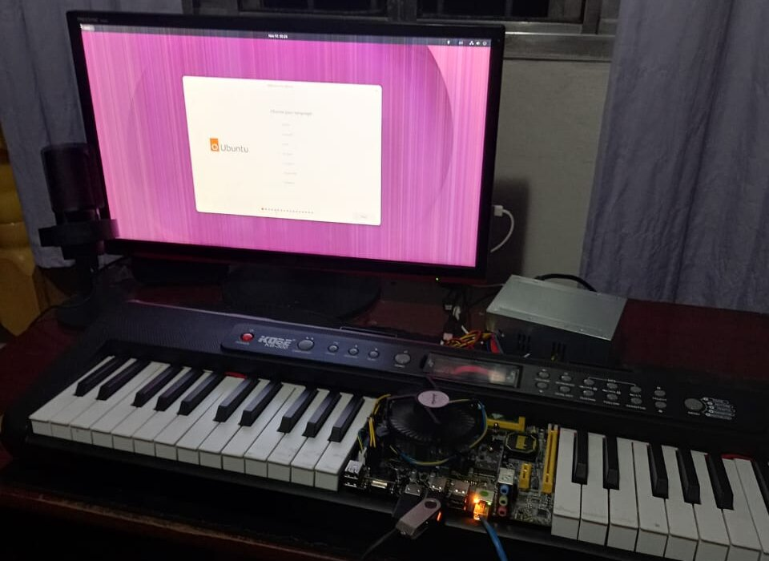
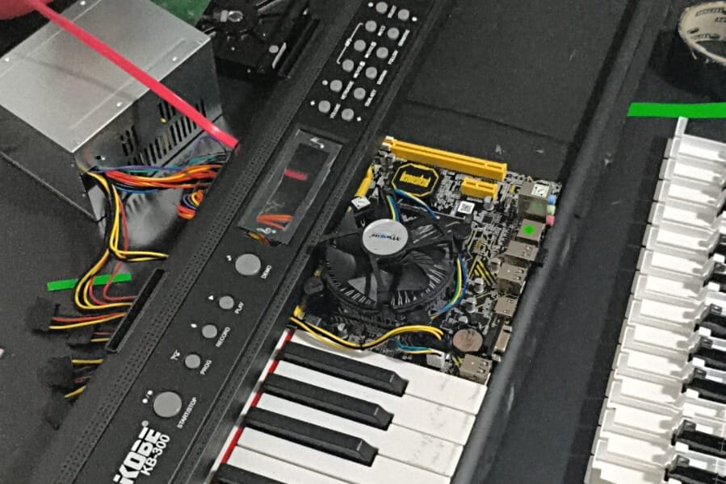
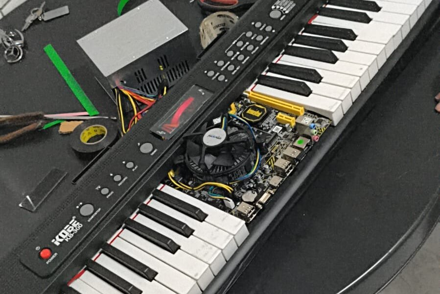

Intel Core i5-3470
- 4 núcleos / 4 threads
- 3,20 GHz (3,60 GHz Turbo)
- 6 MB de cache
- Soquete LGA 1155
Projeto Semestral · Música & Tecnologia
Onde a música encontra a tecnologia.
Um piano tocável, a história da música e a física do som.
Por trás do site.
Synthesis é o nosso projeto para a Expotech: um case mod que transforma um piano digital na carcaça de um computador. Dentro dele roda um Windows Server com uma máquina virtual Ubuntu, e é essa máquina que hospeda o site que você está vendo agora. Este site está rodando de dentro do piano.
Nosso objetivo é misturar arte musical e tecnologia. O piano deixa de ser só instrumento e vira também servidor, e o site leva essa mistura adiante: um piano tocável, a história da música e a física do som, tudo criado com código.
img/projeto-1.jpg

img/projeto-2.jpg

img/projeto-3.jpg

O computador que vive dentro do piano.
Toque com o mouse, com o dedo ou com o teclado do computador. Cada som é gerado em tempo real, sem nenhum arquivo de áudio.
Linha de baixo Z a M · linha de cima Q a I · teclas pretas em S D G H J e nos números
Quatro séculos de música em oito momentos.
Ornamentos, contraponto e o nascimento da ópera. O cravo e o órgão dominavam, e o baixo contínuo sustentava as harmonias.
Clareza, equilíbrio e forma. Nasce a sinfonia moderna e o pianoforte começa a substituir o cravo.
Emoção acima de tudo. O piano vira o instrumento-estrela, com virtuoses lotando salas de concerto pela Europa.
Nascido em Nova Orleans da mistura de blues, ragtime e tradições africanas. A palavra-chave é improvisação.
Guitarras elétricas, atitude e rebeldia. Do rock'n'roll dos anos 50 aos shows em estádios lotados.
O Brasil mostra ao mundo um samba sofisticado, com harmonias do jazz e um violão quase sussurrado.
Sintetizadores e computadores viram instrumentos. O som passa a ser criado do zero, exatamente como neste site.
Streaming, estúdios caseiros e algoritmos. Qualquer pessoa com um computador pode compor, gravar e publicar para o mundo.
Todo som é uma onda. Mexa nos controles e veja (e ouça) o que acontece.
Quantas vezes por segundo o ar vibra. Mais vibrações, som mais agudo. O Lá central vibra 440 vezes por segundo.
A "altura" da onda. Quanto maior, mais energia ela carrega e mais alto o som que percebemos.
O formato da onda. É por isso que piano e violino soam diferentes tocando a mesma nota.
Dobre a frequência e você ouve a mesma nota, mais aguda. 220, 440 e 880 Hz são todos Lá.
Notas tocadas juntas formam acordes, a base da harmonia. Clique para ouvir e ver o desenho de cada um no teclado.
Cada acorde é um conjunto de notas que soam ao mesmo tempo.
A progressão mais famosa da música pop: I – V – vi – IV
Sem a música, a vida seria um erro. Friedrich Nietzsche